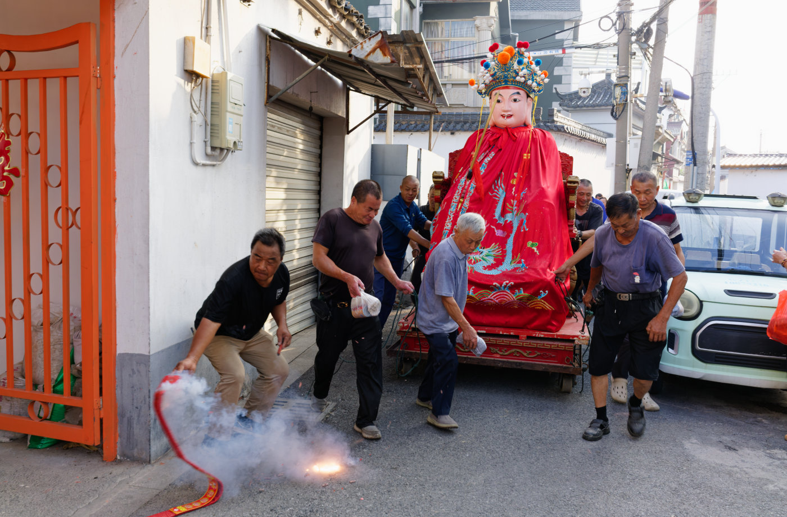

给七种武器的Published Work增加子标题功能
为七种武器页面的 Published Work 增加轻量的二级分类：只需在 camera、lens 或 film 元数据中以 `:::` 标记子标题，便能按不同机型或胶卷风格归档作品，同时保持旧文章兼容。
Personal Archive
这里保存一些照片、文字、器材折腾，以及我对日常生活的观察。摄影是入口，文字是线索，最后留下来的大概是一个人的观看方式。

为七种武器页面的 Published Work 增加轻量的二级分类：只需在 camera、lens 或 film 元数据中以 `:::` 标记子标题，便能按不同机型或胶卷风格归档作品，同时保持旧文章兼容。

一款内置多种复古相机与胶片色调的手机摄影 App。

雨天在路上，公路一直向前延伸。路、人和陌生的风景，都被雨水写成朦胧的诗。

离开猛将堂后，我跟随摄友走进相邻村落，意外赶上抬猛将队伍归来。返程前的十几分钟，又拍下了沿途上香的村民与村巷里的日常。

农历七月末，我走进常熟陈家市附近的老街巷，寻找一种正在渐渐少见的旧俗——插地藏香。香火并不多，更多的是寻找途中遇见的街灯、行人、摊贩与夜色。


A personal archive of photographs, notes and curiosities.